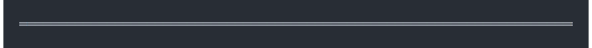
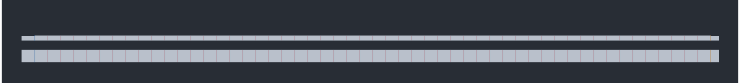
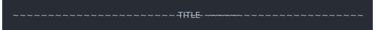
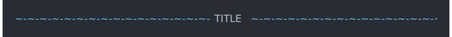

| rule {cli} | R Documentation |
The rule can include either a centered text label, or labels on the left and right side.
To color the labels, use the functions col_*, bg_* and style_*
functions, see ANSI styles, and the examples below.
To color the line, either these functions directly, or the line_col
option.
rule( left = "", center = "", right = "", line = 1, col = NULL, line_col = col, background_col = NULL, width = console_width() )
left |
Label to show on the left. It interferes with the |
center |
Label to show at the center. It interferes with the
|
right |
Label to show on the right. It interferes with the |
line |
The character or string that is used to draw the line.
It can also |
col |
Color of text, and default line color. Either an ANSI style
function (see ANSI styles), or a color name that is
passed to |
line_col, background_col |
Either a color name (used in
|
width |
Width of the rule. Defaults to the |
rule()
Some strings for the line argument are interpreted specially:
"single": (same as 1), a single line,
"double": (same as 2), a double line,
"bar1", "bar2", "bar3", etc., "bar8" uses varying height bars.
rule(line = 2)

rule(line = "bar2") rule(line = "bar5")

rule(center = "TITLE", line = "~")

rule(center = "TITLE", line = col_blue("~-"))

rule(center = bg_red(" ", symbol$star, "TITLE",
symbol$star, " "),
line = "\u2582",
line_col = "orange")
rule(left = "Results")
rule(center = " * RESULTS * ")
rule(center = col_red(" * RESULTS * "))
rule(center = col_red(" * RESULTS * "), line_col = "red")
Character scalar, the rule.